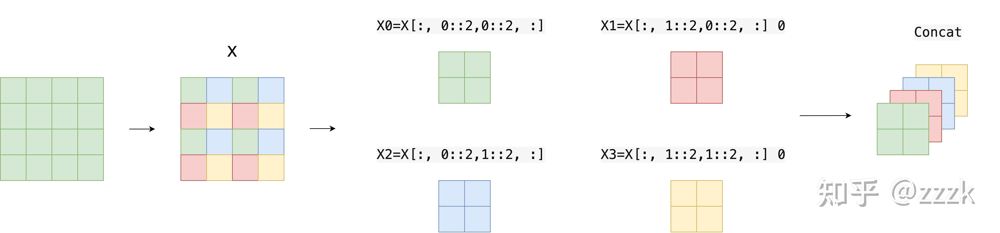

【纯转载】图解Swin Transformer
# 引言
目前Transformer应用到图像领域主要有两大挑战：
- 视觉实体变化大，在不同场景下视觉Transformer性能未必很好
- 图像分辨率高，像素点多，Transformer基于全局自注意力的计算导致计算量较大
针对上述两个问题，我们提出了一种 包含滑窗操作，具有层级设计 的Swin Transformer。
其中滑窗操作包括 不重叠的local window，和重叠的cross-window 。将注意力计算限制在一个窗口中， 一方面能引入CNN卷积操作的局部性，另一方面能节省计算量 。
在各大图像任务上，Swin Transformer都具有很好的性能。
本文比较长，会根据官方的开源代码进行讲解，有兴趣的可以去阅读下论文原文。
# 整体架构
我们先看下Swin Transformer的整体架构
整个模型采取层次化的设计，一共包含4个Stage，每个stage都会缩小输入特征图的分辨率，像CNN一样逐层扩大感受野。
- 在输入开始的时候，做了一个
Patch Embedding，将图片切成一个个图块，并嵌入到Embedding。 - 在每个Stage里，由
Patch Merging和多个Block组成。 - 其中
Patch Merging模块主要在每个Stage一开始降低图片分辨率。 - 而Block具体结构如右图所示，主要是
LayerNorm，MLP，Window Attention和Shifted Window Attention组成 (为了方便讲解，我会省略掉一些参数)
class SwinTransformer(nn.Module):
def __init__(...):
super().__init__()
...
# absolute position embedding
if self.ape:
self.absolute_pos_embed = nn.Parameter(torch.zeros(1, num_patches, embed_dim))
self.pos_drop = nn.Dropout(p=drop_rate)
# build layers
self.layers = nn.ModuleList()
for i_layer in range(self.num_layers):
layer = BasicLayer(...)
self.layers.append(layer)
self.norm = norm_layer(self.num_features)
self.avgpool = nn.AdaptiveAvgPool1d(1)
self.head = nn.Linear(self.num_features, num_classes) if num_classes > 0 else nn.Identity()
def forward_features(self, x):
x = self.patch_embed(x)
if self.ape:
x = x + self.absolute_pos_embed
x = self.pos_drop(x)
for layer in self.layers:
x = layer(x)
x = self.norm(x) # B L C
x = self.avgpool(x.transpose(1, 2)) # B C 1
x = torch.flatten(x, 1)
return x
def forward(self, x):
x = self.forward_features(x)
x = self.head(x)
return x
2
3
4
5
6
7
8
9
10
11
12
13
14
15
16
17
18
19
20
21
22
23
24
25
26
27
28
29
30
31
32
33
34
35
36
37
38
其中有几个地方处理方法与ViT不同：
- ViT在输入会给embedding进行位置编码。而Swin-T这里则是作为一个 可选项 （
self.ape），Swin-T是在计算Attention的时候做了一个相对位置编码 - ViT会单独加上一个可学习参数，作为分类的token。而Swin-T则是 直接做平均 ，输出分类，有点类似CNN最后的全局平均池化层
接下来我们看下各个组件的构成
# Patch Embedding
在输入进Block前，我们需要将图片切成一个个patch，然后嵌入向量。
具体做法是对原始图片裁成一个个 patch_size * patch_size的窗口大小，然后进行嵌入。
这里可以通过二维卷积层， 将stride，kernelsize设置为patch_size大小 。设定输出通道来确定嵌入向量的大小。最后将H,W维度展开，并移动到第一维度
import torch
import torch.nn as nn
class PatchEmbed(nn.Module):
def __init__(self, img_size=224, patch_size=4, in_chans=3, embed_dim=96, norm_layer=None):
super().__init__()
img_size = to_2tuple(img_size) # -> (img_size, img_size)
patch_size = to_2tuple(patch_size) # -> (patch_size, patch_size)
patches_resolution = [img_size[0] // patch_size[0], img_size[1] // patch_size[1]]
self.img_size = img_size
self.patch_size = patch_size
self.patches_resolution = patches_resolution
self.num_patches = patches_resolution[0] * patches_resolution[1]
self.in_chans = in_chans
self.embed_dim = embed_dim
self.proj = nn.Conv2d(in_chans, embed_dim, kernel_size=patch_size, stride=patch_size)
if norm_layer is not None:
self.norm = norm_layer(embed_dim)
else:
self.norm = None
def forward(self, x):
# 假设采取默认参数
x = self.proj(x) # 出来的是(N, 96, 224/4, 224/4)
x = torch.flatten(x, 2) # 把HW维展开，(N, 96, 56*56)
x = torch.transpose(x, 1, 2) # 把通道维放到最后 (N, 56*56, 96)
if self.norm is not None:
x = self.norm(x)
return x
2
3
4
5
6
7
8
9
10
11
12
13
14
15
16
17
18
19
20
21
22
23
24
25
26
27
28
29
30
31
# Patch Merging
该模块的作用是在每个Stage开始前做降采样，用于缩小分辨率，调整通道数 进而形成层次化的设计，同时也能节省一定运算量。
在CNN中，则是在每个Stage开始前用
stride=2的卷积/池化层来降低分辨率。
每次降采样是两倍，因此 在行方向和列方向上，间隔2选取元素 。
然后拼接在一起作为一整个张量，最后展开。 此时通道维度会变成原先的4倍 （因为H,W各缩小2倍），此时再通过一个 全连接层再调整通道维度为原来的两倍
class PatchMerging(nn.Module):
def __init__(self, input_resolution, dim, norm_layer=nn.LayerNorm):
super().__init__()
self.input_resolution = input_resolution
self.dim = dim
self.reduction = nn.Linear(4 * dim, 2 * dim, bias=False)
self.norm = norm_layer(4 * dim)
def forward(self, x):
"""
x: B, H*W, C
"""
H, W = self.input_resolution
B, L, C = x.shape
assert L == H * W, "input feature has wrong size"
assert H % 2 == 0 and W % 2 == 0, f"x size ({H}*{W}) are not even."
x = x.view(B, H, W, C)
x0 = x[:, 0::2, 0::2, :] # B H/2 W/2 C
x1 = x[:, 1::2, 0::2, :] # B H/2 W/2 C
x2 = x[:, 0::2, 1::2, :] # B H/2 W/2 C
x3 = x[:, 1::2, 1::2, :] # B H/2 W/2 C
x = torch.cat([x0, x1, x2, x3], -1) # B H/2 W/2 4*C
x = x.view(B, -1, 4 * C) # B H/2*W/2 4*C
x = self.norm(x)
x = self.reduction(x)
return x
2
3
4
5
6
7
8
9
10
11
12
13
14
15
16
17
18
19
20
21
22
23
24
25
26
27
28
29
30
下面是一个示意图（输入张量N=1, H=W=8, C=1，不包含最后的全连接层调整）

个人感觉这像是PixelShuffle的反操作
# Window Partition/Reverse
window partition函数是用于对张量划分窗口，指定窗口大小。将原本的张量从 N H W C, 划分成 num_windows*B, window_size, window_size, C，其中 num_windows = HW / (window_sizewindow_size) ，即窗口的个数。而window reverse函数则是对应的逆过程。这两个函数会在后面的Window Attention用到。
def window_partition(x, window_size):
B, H, W, C = x.shape
x = x.view(B, H // window_size, window_size, W // window_size, window_size, C)
windows = x.permute(0, 1, 3, 2, 4, 5).contiguous().view(-1, window_size, window_size, C)
return windows
def window_reverse(windows, window_size, H, W):
B = int(windows.shape[0] / (H * W / window_size / window_size))
x = windows.view(B, H // window_size, W // window_size, window_size, window_size, -1)
x = x.permute(0, 1, 3, 2, 4, 5).contiguous().view(B, H, W, -1)
return x
2
3
4
5
6
7
8
9
10
11
# Window Attention
这是这篇文章的关键。传统的Transformer都是 基于全局来计算注意力的 ，因此计算复杂度十分高。而Swin Transformer则将 注意力的计算限制在每个窗口内 ，进而减少了计算量。
我们先简单看下公式
Attention(Q,K,V)=Softmax(dQKT+B)V
主要区别是在原始计算Attention的公式中的Q,K时 加入了相对位置编码 。后续实验有证明相对位置编码的加入提升了模型性能。
class WindowAttention(nn.Module):
r""" Window based multi-head self attention (W-MSA) module with relative position bias.
It supports both of shifted and non-shifted window.
Args:
dim (int): Number of input channels.
window_size (tuple[int]): The height and width of the window.
num_heads (int): Number of attention heads.
qkv_bias (bool, optional): If True, add a learnable bias to query, key, value. Default: True
qk_scale (float | None, optional): Override default qk scale of head_dim ** -0.5 if set
attn_drop (float, optional): Dropout ratio of attention weight. Default: 0.0
proj_drop (float, optional): Dropout ratio of output. Default: 0.0
"""
def __init__(self, dim, window_size, num_heads, qkv_bias=True, qk_scale=None, attn_drop=0., proj_drop=0.):
super().__init__()
self.dim = dim
self.window_size = window_size # Wh, Ww
self.num_heads = num_heads # nH
head_dim = dim // num_heads # 每个注意力头对应的通道数
self.scale = qk_scale or head_dim ** -0.5
# define a parameter table of relative position bias
self.relative_position_bias_table = nn.Parameter(
torch.zeros((2 * window_size[0] - 1) * (2 * window_size[1] - 1), num_heads)) # 设置一个形状为（2*(Wh-1) * 2*(Ww-1), nH）的可学习变量，用于后续的位置编码
self.qkv = nn.Linear(dim, dim * 3, bias=qkv_bias)
self.attn_drop = nn.Dropout(attn_drop)
self.proj = nn.Linear(dim, dim)
self.proj_drop = nn.Dropout(proj_drop)
trunc_normal_(self.relative_position_bias_table, std=.02)
self.softmax = nn.Softmax(dim=-1)
# 相关位置编码...
2
3
4
5
6
7
8
9
10
11
12
13
14
15
16
17
18
19
20
21
22
23
24
25
26
27
28
29
30
31
32
33
34
35
下面我把涉及到相关位置编码的逻辑给单独拿出来，这部分比较绕
首先QK计算出来的Attention张量形状为(numWindows*B, num_heads, window_size*window_size, window_size*window_size)。
而对于Attention张量来说， 以不同元素为原点，其他元素的坐标也是不同的 ，以window_size=2为例，其相对位置编码如下图所示
首先我们利用torch.arange和torch.meshgrid函数生成对应的坐标，这里我们以windowsize=2为例子
coords_h = torch.arange(self.window_size[0])
coords_w = torch.arange(self.window_size[1])
coords = torch.meshgrid([coords_h, coords_w]) # -> 2*(wh, ww)
"""
(tensor([[0, 0, 0],
[1, 1, 1],
[2, 2, 2]]),
tensor([[0, 1, 2],
[0, 1, 2],
[0, 1, 2]]))
"""
2
3
4
5
6
7
8
9
10
11
然后堆叠起来，展开为一个二维向量
coords = torch.stack(coords) # 2, Wh, Ww
coords_flatten = torch.flatten(coords, 1) # 2, Wh*Ww
"""
tensor([[0, 0, 1, 1, 2, 2],
[0, 1, 2, 0, 1, 2]])
"""
2
3
4
5
6
利用广播机制，分别在第一维，第二维，插入一个维度，进行广播相减，得到 2, wh*ww, wh*ww的张量
relative_coords_first = coords_flatten[:, :, None] # 2, wh*ww, 1
relative_coords_second = coords_flatten[:, None, :] # 2, 1, wh*ww
relative_coords = relative_coords_first - relative_coords_second # 最终得到 2, wh*ww, wh*ww 形状的张量
2
3
因为采取的是相减，所以得到的索引是从负数开始的， 我们加上偏移量，让其从0开始 。
relative_coords = relative_coords.permute(1, 2, 0).contiguous() # Wh*Ww, Wh*Ww, 2
relative_coords[:, :, 0] += self.window_size[0] - 1
relative_coords[:, :, 1] += self.window_size[1] - 1
2
3
后续我们需要将其展开成一维偏移量。而对于(1，2）和（2，1）这两个坐标。在二维上是不同的， 但是通过将x,y坐标相加转换为一维偏移的时候，他的偏移量是相等的 。
所以最后我们对其中做了个乘法操作，以进行区分
relative_coords[:, :, 0] *= 2 * self.window_size[1] - 1
然后再最后一维上进行求和，展开成一个一维坐标，并注册为一个不参与网络学习的变量
relative_position_index = relative_coords.sum(-1) # Wh*Ww, Wh*Ww
self.register_buffer("relative_position_index", relative_position_index)
2
接着我们看前向代码
def forward(self, x, mask=None):
"""
Args:
x: input features with shape of (num_windows*B, N, C)
mask: (0/-inf) mask with shape of (num_windows, Wh*Ww, Wh*Ww) or None
"""
B_, N, C = x.shape
qkv = self.qkv(x).reshape(B_, N, 3, self.num_heads, C // self.num_heads).permute(2, 0, 3, 1, 4)
q, k, v = qkv[0], qkv[1], qkv[2] # make torchscript happy (cannot use tensor as tuple)
q = q * self.scale
attn = (q @ k.transpose(-2, -1))
relative_position_bias = self.relative_position_bias_table[self.relative_position_index.view(-1)].view(
self.window_size[0] * self.window_size[1], self.window_size[0] * self.window_size[1], -1) # Wh*Ww,Wh*Ww,nH
relative_position_bias = relative_position_bias.permute(2, 0, 1).contiguous() # nH, Wh*Ww, Wh*Ww
attn = attn + relative_position_bias.unsqueeze(0) # (1, num_heads, windowsize, windowsize)
if mask is not None: # 下文会分析到
...
else:
attn = self.softmax(attn)
attn = self.attn_drop(attn)
x = (attn @ v).transpose(1, 2).reshape(B_, N, C)
x = self.proj(x)
x = self.proj_drop(x)
return x
2
3
4
5
6
7
8
9
10
11
12
13
14
15
16
17
18
19
20
21
22
23
24
25
26
27
28
29
30
- 首先输入张量形状为
numWindows*B, window_size * window_size, C（后续会解释） - 然后经过
self.qkv这个全连接层后，进行reshape，调整轴的顺序，得到形状为3, numWindows*B, num_heads, window_size*window_size, c//num_heads，并分配给q,k,v。 - 根据公式，我们对
q乘以一个scale缩放系数，然后与k（为了满足矩阵乘要求，需要将最后两个维度调换）进行相乘。得到形状为(numWindows*B, num_heads, window_size*window_size, window_size*window_size)的attn张量 - 之前我们针对位置编码设置了个形状为
(2*window_size-1*2*window_size-1, numHeads)的可学习变量。我们用计算得到的相对编码位置索引self.relative_position_index选取，得到形状为(window_size*window_size, window_size*window_size, numHeads)的编码，加到attn张量上 - 暂不考虑mask的情况，剩下就是跟transformer一样的softmax，dropout，与
V矩阵乘，再经过一层全连接层和dropout
# Shifted Window Attention
前面的Window Attention是在每个窗口下计算注意力的，为了更好的和其他window进行信息交互，Swin Transformer还引入了shifted window操作。
左边是没有重叠的Window Attention，而右边则是将窗口进行移位的Shift Window Attention。可以看到移位后的窗口包含了原本相邻窗口的元素。但这也引入了一个新问题，即 window的个数翻倍了 ，由原本四个窗口变成了9个窗口。
在实际代码里，我们是 通过对特征图移位，并给Attention设置mask来间接实现的 。能在 保持原有的window个数下 ，最后的计算结果等价。
# 特征图移位操作
代码里对特征图移位是通过torch.roll来实现的，下面是示意图

如果需要
reverse cyclic shift的话只需把参数shifts设置为对应的正数值。
# Attention Mask
我认为这是Swin Transformer的精华，通过设置合理的mask，让Shifted Window Attention在与Window Attention相同的窗口个数下，达到等价的计算结果。
首先我们对Shift Window后的每个窗口都给上index，并且做一个roll操作（window_size=2, shift_size=-1）
我们希望在计算Attention的时候， 让具有相同index QK进行计算，而忽略不同index QK计算结果 。
最后正确的结果如下图所示
而要想在原始四个窗口下得到正确的结果，我们就必须给Attention的结果加入一个mask（如上图最右边所示）
相关代码如下：
if self.shift_size > 0:
# calculate attention mask for SW-MSA
H, W = self.input_resolution
img_mask = torch.zeros((1, H, W, 1)) # 1 H W 1
h_slices = (slice(0, -self.window_size),
slice(-self.window_size, -self.shift_size),
slice(-self.shift_size, None))
w_slices = (slice(0, -self.window_size),
slice(-self.window_size, -self.shift_size),
slice(-self.shift_size, None))
cnt = 0
for h in h_slices:
for w in w_slices:
img_mask[:, h, w, :] = cnt
cnt += 1
mask_windows = window_partition(img_mask, self.window_size) # nW, window_size, window_size, 1
mask_windows = mask_windows.view(-1, self.window_size * self.window_size)
attn_mask = mask_windows.unsqueeze(1) - mask_windows.unsqueeze(2)
attn_mask = attn_mask.masked_fill(attn_mask != 0, float(-100.0)).masked_fill(attn_mask == 0, float(0.0))
2
3
4
5
6
7
8
9
10
11
12
13
14
15
16
17
18
19
20
以上图的设置，我们用这段代码会得到这样的一个mask
tensor([[[[[ 0., 0., 0., 0.],
[ 0., 0., 0., 0.],
[ 0., 0., 0., 0.],
[ 0., 0., 0., 0.]]],
[[[ 0., -100., 0., -100.],
[-100., 0., -100., 0.],
[ 0., -100., 0., -100.],
[-100., 0., -100., 0.]]],
[[[ 0., 0., -100., -100.],
[ 0., 0., -100., -100.],
[-100., -100., 0., 0.],
[-100., -100., 0., 0.]]],
[[[ 0., -100., -100., -100.],
[-100., 0., -100., -100.],
[-100., -100., 0., -100.],
[-100., -100., -100., 0.]]]]])
2
3
4
5
6
7
8
9
10
11
12
13
14
15
16
17
18
19
在之前的window attention模块的前向代码里，包含这么一段
if mask is not None:
nW = mask.shape[0]
attn = attn.view(B_ // nW, nW, self.num_heads, N, N) + mask.unsqueeze(1).unsqueeze(0)
attn = attn.view(-1, self.num_heads, N, N)
attn = self.softmax(attn)
2
3
4
5
将mask加到attention的计算结果，并进行softmax。mask的值设置为-100，softmax后就会忽略掉对应的值
# Transformer Block整体架构

两个连续的Block架构如上图所示，需要注意的是一个Stage包含的Block个数必须是偶数，因为需要交替包含一个含有Window Attention的Layer和含有Shifted Window Attention的Layer。
我们看下Block的前向代码
def forward(self, x):
H, W = self.input_resolution
B, L, C = x.shape
assert L == H * W, "input feature has wrong size"
shortcut = x
x = self.norm1(x)
x = x.view(B, H, W, C)
# cyclic shift
if self.shift_size > 0:
shifted_x = torch.roll(x, shifts=(-self.shift_size, -self.shift_size), dims=(1, 2))
else:
shifted_x = x
# partition windows
x_windows = window_partition(shifted_x, self.window_size) # nW*B, window_size, window_size, C
x_windows = x_windows.view(-1, self.window_size * self.window_size, C) # nW*B, window_size*window_size, C
# W-MSA/SW-MSA
attn_windows = self.attn(x_windows, mask=self.attn_mask) # nW*B, window_size*window_size, C
# merge windows
attn_windows = attn_windows.view(-1, self.window_size, self.window_size, C)
shifted_x = window_reverse(attn_windows, self.window_size, H, W) # B H' W' C
# reverse cyclic shift
if self.shift_size > 0:
x = torch.roll(shifted_x, shifts=(self.shift_size, self.shift_size), dims=(1, 2))
else:
x = shifted_x
x = x.view(B, H * W, C)
# FFN
x = shortcut + self.drop_path(x)
x = x + self.drop_path(self.mlp(self.norm2(x)))
return x
2
3
4
5
6
7
8
9
10
11
12
13
14
15
16
17
18
19
20
21
22
23
24
25
26
27
28
29
30
31
32
33
34
35
36
37
38
整体流程如下
- 先对特征图进行LayerNorm
- 通过
self.shift_size决定是否需要对特征图进行shift - 然后将特征图切成一个个窗口
- 计算Attention，通过
self.attn_mask来区分Window Attention还是Shift Window Attention - 将各个窗口合并回来
- 如果之前有做shift操作，此时进行
reverse shift，把之前的shift操作恢复 - 做dropout和残差连接
- 再通过一层LayerNorm+全连接层，以及dropout和残差连接
# 实验结果

在ImageNet22K数据集上，准确率能达到惊人的86.4%。另外在检测，分割等任务上表现也很优异，感兴趣的可以翻看论文最后的实验部分。
# 总结
这篇文章创新点很棒，引入window这一个概念，将CNN的局部性引入，还能控制模型整体计算量。在Shift Window Attention部分，用一个mask和移位操作，很巧妙的实现计算等价。作者的代码也写得十分赏心悦目，推荐阅读！